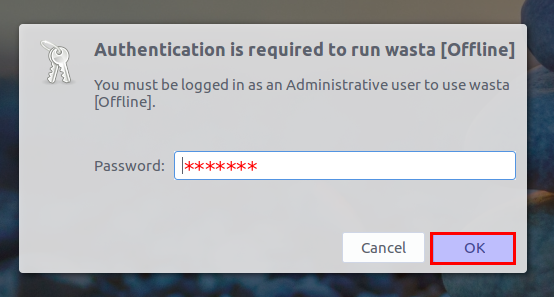
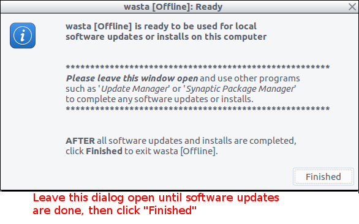
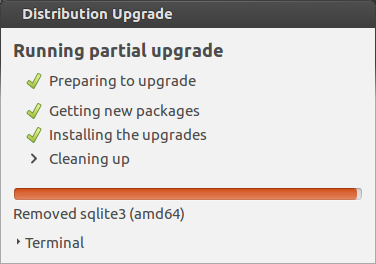

This
document is an illustrated guide that shows how to keep your Wasta
Linux software up to date using a memory stick or an external drive
containing the updated software packages. One of the most powerful
features of Wasta is the ability to do a simple upgrade of ALL the
user's software applications, plus Wasta itself, and without
disturbing their language data, and WITHOUT the necessity of a good
Internet connection. In fact, all software updates can be done
without any access to the Internet. The program for this is called
Wasta-offline
and it
is already present to run in any version of Wasta.
This
document is an illustrated guide that shows how to keep your Wasta
Linux software up to date using a memory stick or an external drive
containing the updated software packages. One of the most powerful
features of Wasta is the ability to do a simple upgrade of ALL the
user's software applications, plus Wasta itself, and without
disturbing their language data, and WITHOUT the necessity of a good
Internet connection. In fact, all software updates can be done
without any access to the Internet. The program for this is called
Wasta-offline
and it
is already present to run in any version of Wasta.
This document is designed to be a guide for Wasta computer users who have created or have been given a memory stick or an external USB hard drive containing software updates.
It makes sense:
If you were given a memory stick or external hard drive containing software updates to be installed on your computer (without accessing the Internet)
If you created a memory stick or external hard drive containing software updates to be installed on your computer, and possibly other Wasta computers (without accessing the Internet)
Your Internet access is slow, or expensive, and you have multiple Wasta computers to update
You need to update the software on many Wasta Linux computers and want the updating process to be as fast and efficient as possible
The memory stick or external hard drive has pre-loaded all the updates for the various software packages that the user already has installed in Wasta.
The developers of open source software are continuously updating their software to improve it and to fix any bugs or security issues. Therefore, keeping your software up to date can involve downloading a lot of large files from the Internet. That is not a big problem if you have adequate (and relatively inexpensive) Internet access. If that is the case, then you do not need to use the wasta-offline system or follow the procedures described in this document. However, most of the Wasta computer users in regions like PNG and the greater Pacific Islands are not going to be in such a situation.
“How to obtain a Full Wasta-Offline Mirror residing on a 1TB USB hard drive”
“How to get software updates for a Full Wasta-Offline Mirror residing on a 1TB USB hard drive”
To start, insert the latest wasta-offline memory stick or external drive that contains the latest software upgrades already installed.

The wasta-offline program should automatically run about 10 seconds after you plug in the memory stick or external drive. If the wasta-offline program starts automatically skip down to the section called "When wasta-offline starts automatically" below. If the wasta-offline program does not start automatically follow the “Starting wasta-offline manually...” section below.
In some cases wasta-offline may not start up automatically when the memory stick or external USB drive is plugged in. This might be the case if the user's computer has an early version of Wasta, or is running some other version of Linux, on which wasta-offline has not yet been installed.
There are several ways you can start up a program in Wasta Linux.
The wasta-offline program can be started from the main Wasta Menu by clicking on the Menu icon at the lower left of the screen, then selecting the Administration category, and scrolling the list at right down to the wasta [Offline] menu item and clicking on it as shown in the Menu illustration below:
Some people prefer to start a program by searching for it by name. If you know the name of a program you can click on the Wasta main Menu, and start typing the name of a program (or just the first part of the name of the program) in the search box at the top of the main Menu. As you type the name the possible matches are shown in the list at right as shown in the Menu illustration below:
When the menu item wasta [Offline] appears in the list you can click on it to start it running. If you completely type the entire name of the program – wasta-offline – only that program will appear in the list at right, and it will be automatically highlighted and pressing Enter will start it running.
Other people who do not like navigating in menus, may use a pop-up command prompt and type the full name of the program there. Type the key combination Alt + F2 to cause a pop-up run command prompt to appear (you can enter any number of commands this way without using a menu or a terminal window). The command prompt will look like this:
Type
into the prompt’s text box this command:
wasta-offline
and initiate the command by pressing the Enter key. The wasta-offline program should start up.
Note: If you do not get a response using Method 1, Method 2 or Method 3 above, it may be that wasta-offline is not yet installed on your computer. If this is the case you will need to install the wasta-offline program on the local computer before you can proceed. In most cases, the memory stick or external hard drive should have a copy of the program on its root directory. If you find it there it should be called something like the following:
wasta-offline_1.1.9.6~ubuntu16.04.1_all.deb [for Wasta 16.04], or
wasta-offline_1.1.9.6~ubuntu14.04.1_all.deb [for Wasta 14.04]
You should be able to double click on the appropriate deb file to install wasta-offline on your system. Once you have installed wasta-offline continue with the instructions below.
After typing in the command wasta-offline, you will be prompted for the computer user's administrative password:

Enter the computer user's administrative password for this computer, and press OK.
The first dialog box above, warns you that you will soon be asked where on the system to find the update files. You should have the memory stick or external USB drive already inserted into the USB port on the side of your machine, so you can proceed with the Yes button at this point. Another dialog appears:
Normally the wasta-offline program will be able to find the location of the wasta-offline folder on the memory stick or external USB drive, and it will be automatically selected as shown in the dialog above.
However, if no wasta-offline folder is automatically selected, you need to navigate (in the left pane) to the name of the memory stick or external hard drive that you inserted and find the folder named wasta-offline (in the main window pane) and highlight it. It is the folder which already contains the files representing all the software updates:
downloaded from the Internet or server in the case of the 1TB USB hard drive, or
transferred from an already updated source Wasta computer by means of wasta-offline-setup onto a memory stick
In the illustration above, the name of the external USB drive is called LM-UPDATES. It was automatically selected, and often the wasta-offline was automatically be selected for you. Finish by clicking the OK button.
In most cases wasta-offline will start automatically within a few seconds after the wasta-offline memory stick or external hard drive is plugged in. The first thing you will see is an authentication dialog:
After entering the password the first dialog you will see is the wasta [Offline] dialog shown below:

This dialog might seem redundant since there is only one button to click here before proceeding. But on some systems with adequate Internet access, you might want to get software updates from BOTH the memory stick (first priority) and directly from the Internet. This might be desired in cases where there are software updates that you know are available over the Internet but are not available on the memory stick or external hard drive. When wasta-offline detects that you have Internet access this dialog will offer two selections:
OFFLINE ONLY – the default mode in which wasta-offline gets updates from the memory stick or 1TB external USB hard drive mirror only – it does not try to access the Internet
OFFLINE AND INTERNET – the optional “hybrid” mode in which wasta-offline will first try to get updates from the memory stick or 1TB external USB hard drive - if it can’t find all the updates (or dependencies) it needs from there, it will try to get any remaining data it needs from the Internet
So, when Internet appear to be available, the dialog will look something like this shown below:
Note the presence of the second option button. In order to protect you from unintended Internet data charges, the second option is never automatically selected. You have to deliberately select the second choice - if including the Internet data mode is best. In some countries the Internet is available, but the cost per Megabyte download is rather expensive. Other countries the Internet is relatively free to download updates.
Many remote users won't have Internet access at the time they do
their software update from a memory stick or a full external USB
mirror, so the first dialog (the one with just the OFFLINE ONLY
option) is normally what they will see. This is the typical scenario
for the remote Manus Island Language Workers within PNG.
In
our example far above... we are simply loading all updates from a
memory stick or external USB drive, and so we simply click the OK
button.
After you click on the OK button, the wasta-offline program then does some work in the background for a short period of time (temporarily replacing the user's sources.list file with one that points to the external USB mirror or the USB memory stick, rather than the remote Internet repositories, and then it inventories the updates that are available for your computer). The background work being done (using a FULL mirror) can take a minute or two. To let the user know that something is happening, the following dialogs are shown temporarily as progress indicators during the background processes:
The above progress indicator appears for anywhere from a few seconds up to about 2 minutes, showing the different repositories that are being scanned and "added" from the external mirror. As soon as the scanning process is complete the following progress indicator appears for about 6-12 seconds (with elapsed time changing until complete):
As soon as the background work is done the progress indicators automatically disappear and the following message is presented to the user:

At this point we are ready to do a "normal" software update procedure. Important: You must leave this wasta [Offline] Ready dialog "open" and unfinished as you go on to the next steps.
Wasta-offline has temporarily re-arranged the expected places to find updates on the memory stick or external hard drive, but if you click Finish too early, then the system reverts back to its original mode of looking for updates off the Internet instead.
There are many ways to update software in Wasta Linux, but here we will describe the tool called Software Updater which is one of the “normal” software tools to upgrade software packages in the Ubuntu/Wasta Linux systems. Software Updater usually looks for updates on the Internet, but while wasta-offline is running (and the above “Ready” message is displaying), Software Updater is temporarily directed to get its updates from the memory stick or external hard drive that is plugged into the computer – instead of the Internet.
It is possible that the Technician for your project has given out a USB memory stick with useful updates for you to "download" (really transfer) over to the Language Worker's computer. It's also possible, that the entire Linux repository of possible software has been given to you instead on an external hard drive. If such a "mirror" of the Internet has been given, then instead of a small memory stick, there will be a larger USB powered portable hard-drive given. This copy or "mirror" of the Internet files, could be as large as 600 Gigabytes! Quite large indeed.
The Software Updater program can be started by one of the three methods that you used earlier to start running the wasta-offline program itself. However, there is another method that is even easier to access, by clicking on an icon on your desktop as shown below:

Click on the Software Updater icon found on the lower right corner of the desktop. In the image above, the system is reporting that there are 16 updates available. That number will vary from update to update. It is the number of packages that would have been transferred over the Internet, if you had used the Internet to download the updates.
With wasta-offline still running (and the “Ready” message still open), select the Show updates option from the menu that appears in the software updater’s menu (Note: selecting the Install all updates menu item bypasses the next dialog).
The Software Updater will start up and show any updates that are available to install:

Note: If, if clicking on the Show updates menu item doesn’t seem to result in any response, click on the tray icon again and select the Show updates a second time. If, instead of the dialog above, you see the following dialog appear:
see the section later in this document called Doing a Partial Upgrade for special procedures for this situation, otherwise continue with the instructions below.
In the lower left part of the Software Updater dialog it says that “2.7 MB will be downloaded” for this particular software update. Occasionally, there may be many tens or hundreds of megabytes to “be downloaded”. Since we are using wasta-offline, the amount to be “downloaded” here will be done directly from the plugged-in memory stick or external USB drive, rather than from the Internet. You can well imagine how using wasta-offline can improve the speed and eliminate the cost of such downloads, especially in areas where Internet is slow or expensive.
Click on the Install Now button to begin the software updates to your system. You may be asked to enter computer user's administrative password , if it has been more than 15 minutes since you started wasta-offline. The Software Updater first downloads the updates from the memory stick or external USB drive:

And
then it applies those updates in the same operation:

Note: On rare occasions one of the software packages being updated might need input from the user during the update process. For example, the grub-pc package is known to ask for this confirmation:
Click
the Forward button to keep the maintainer’s version of the
update.
When the installation process is complete Software Updater will report that your computer is up to date:

When the user clicks on the OK button, the Update Manager automatically closes too, leaving the still-open wasta-offline message box the user saw at the beginning of the update process (and has been left open during the software updates):

If you have completed the above update process skip down to the Finishing the update process section.
On rare occasions, upon selecting the Software Updater icon and Show updates menu item, you may be informed that “Not all updates can be installed”. The dialog you see will look like this:
If you see this message while wasta-offline is running, the best option is to select is the Partial Upgrade button, and then continue with the upgrade process until it completes. Do not select Continue as that will install some updates, but Software Updater will keep prompting you for a Partial Upgrade in the future, so you should just select Partial Upgrade at the outset and get the upgrade done now while wasta-offline is running.
If you did not see the “Not all updates can be installed” dialog shown above dialog just skip down to the Finishing the update process.
Pressing the Partial Upgrade button will start the upgrade process which will involve interacting with a few messages and dialogs. A partial upgrade requires you provide the computer user’s administrative password for the action:
Type the password and press the Authenticate button. You will see a “Distribution Upgrade” dialog that looks like this:
which will “calculate the changes” for a few minutes, and then you will be asked:
The dialog summarizes what will be done. Ensure that you don’t have any open documents or applications other than the Wasta-Offline “Ready” message. Then click on the Start Upgrade button. The upgrade may take a while, but the computer will not have to download any of the upgraded packages from the Internet, since wasta-offline is running and the upgraded packages will be “downloaded” from the external hard drive. You will then see a series of progress messages as shown below:
|
|
|
|
You may then be asked for permission to remove obsolete packages:
Click on the Remove button. A progress message will appear while the upgrade process does some cleaning up:

and finally, you should see the “Upgrade complete” message:
At this point the partial upgrade is now complete. Click the Close button shown above.
The “Ready” message of the Wasta-Offline program that you saw earlier should still be showing on your screen. If you want to install new software keep reading the section below. If you are finished updating your computer, skip down to the Finishing the update process section.
While the Full Wasta-Offline Mirror can be used to update existing software on your computer, it is also possible to use the full mirror to install new software from the inventory of over 55,000 Linux software packages that already exist in the 600GB of data contained on the Full Wasta-Offline Mirror – all without accessing the Internet! If you do not wish to install any new software just skip down to the Finishing the update process section.
If you wish to install a new program – while Wasta-Offline is running and its “Ready” message is displaying on your desktop - you can do so with a program called Synaptic Package Manager. This package manager can be started from the same pop up menu you used earlier:
Click on the Software Updater icon on the task bar and select the Start package manager item from the pop up menu as shown above. Installing software requires administration privileges, so you will need to computer user's administrative password for this computer:
Enter the password and click on Authenticate.
The Synaptic Package Manager runs and displays its main screen as follows:
The Synaptic Package Manger has a lot of features that we won’t describe here. We’ll simply show how to search for and install a new software program that doesn’t come pre-installed in Wasta Linux. You can scroll down through all 55,000 + packages to see what’s there, but if you know what a program is called, it is much quicker to search for it using the Search button shown above.
Click on the Search button as shown above. In the Search box, type the name tuxmath which is a math game for children that we’ll use as an example to install:
Click on the Search button of this Search dialog. The program will search its inventory of programs, and will show you its search results in the main program window as follows:
A
short description of the highlighted package is given in the right
column along with its version numbers. Hint: you can often find more
detailed information about Linux programs using Google or other
search engine on the Internet. If you want to install tuxmath and try
it out (you can easily remove it later with this same Synaptic
Package Manager), click on the empty check box at the left of
the package name tuxmath where you will see a pop up menu like this:
If the program you want to install, has additional dependencies that it needs, you will see a dialog that lists those additional changes, and asks you to confirm you want to proceed:
Go ahead and click the Mark button.
The display will then show the program (tuxmath) and any of its dependencies marked with ticks in their check boxes as shown below:
At
this point you could Search for other programs you want to install
and mark them with ticks in their check boxes – as you have done
with the tuxmath program. With the program(s) you want to install
“marked”, click on the Apply button in the tool bar as
shown above.
The package manager asks you to confirm your choice(s) of packages/programs to be installed as shown below:
Finally, click on the Apply button. The program proceeds to download, and install the program showing the following progress dialogs:
|
|
|
Using wasta-offline the downloading happens very quickly and installation is fast. When the process is complete you will see the following message:
Click on the Close button. The package manager will show the installed program(s) now with a solid green filled check boxes – the same marking that it shows for all other installed programs on your computer:
If you are finished installing software you can close the Synaptic Package Manager window.
Tux Math is an entertaining math game featuring Tux - the Linux penguin mascot. Once Tux Math is installed you can find it and run it from the main Wasta Menu in the Education category.
There are other interesting “Tux” games including Tux Type (a typing tutor), Tux Football (soccer), Tux Paint, etc. Just Search for “tux” in the package manager’s Search box.
Continue with the section below to end the wasta-offline session.
The wasta-offline “Ready” message should still be displaying on your desktop:
You should now, click the Finish button to formally end the Wasta-Offline session and close the “Ready” message.
At this point the system has returned back to "normal" and will look for updates, as before, by using the Internet. If the system were somehow brought to a town and connected, then it would be ready to receive downloads and updates via the Internet.
Since you have just completed the update process, you can now "Safely Remove" the external USB hard drive mirror or the USB memory stick. Hover the mouse over the icons found on the lower right corner of the desktop as you look for the Removable drives icon:
Click
on the Removable drives icon
to display the pop up menu:

The external USB drive we are demonstrating is named LM-UPDATES. In the illustration above it is the only device listed in the removable drives menu list (there may be other drives listed for your computer). Click on the up-pointing arrow icon shown above to safely remove the external drive containing the wasta-offline updates (mirror). The icon and pop up menu will disappear when it is safe to remove the USB device from the computer (you may also see a notification at the top of your screen).
The process of updating your Wasta-Linux software without accessing the Internet (offline) is now complete.
If you have multiple computers running Wasta-Linux, you can do the same process on all of those computers without accessing the Internet on any of them. You can follow the above process as often as there are new updates on memory stick or external USB drive.
For information on how to get the latest software updates loaded on the memory stick or external USB drive, see these documents:
How
to update your Wasta-Linux software offline